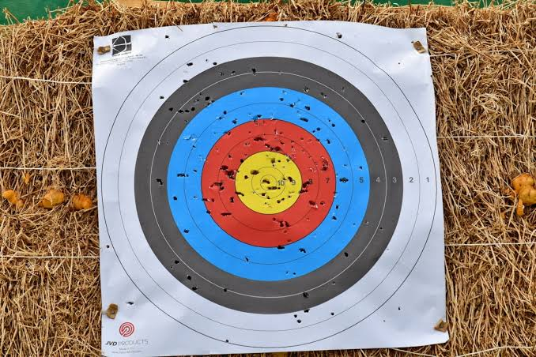
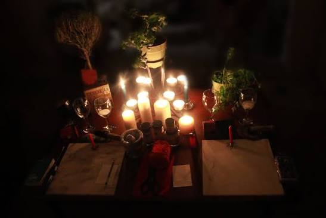
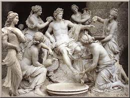
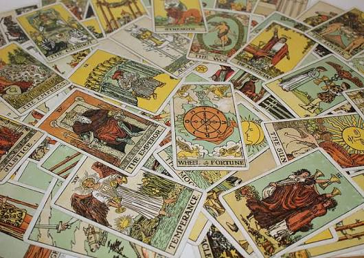

LUCIFERIANISMO
O que é o Luciferianismo?
O Luciferianismo é uma corrente espiritual que busca a auto-realização e o conhecimento e a liberdade.
Lucifer/Lux Ferre, o "portador da luz", é visto como um símbolo de rebeldia e questionamento das autoridades estabelecidas.
Princípios básicos
Liberdade
0 Luciferianismo valoriza a liberdade individual e a autonomia.
Conhecimento
A busca do conhecimento e da sabedoria é fundamental para o Luciferianismo.

Auto-realização
0 objetivo é alcançar a auto-realização e a iluminação através da introspecção e da prática espiritual.
Práticas
Meditação
A meditação e a introspecção são práticas comuns no Luciferianismo.
Estudo
O estudo de textos filosóficos e espirituais é fundamental para o Luciferianismo.

Ritual
Os rituais e cerimônias podem ser usados para simbolizar a busca da iluminação e da liberdade.
Diversidade
O Luciferianismo é uma corrente diversa e complexa, com diferentes interpretações e práticas.
Respeito
É importante abordar o Luciferianismo com respeito e compreensão, evitando estereótipos e preconceitos. Lembre-se de que o Luciferianismo é uma filosofia complexa e multifacetada, e essa introdução é apenas um ponto de partida para explorar mais sobre o assunto.

Luciferianismo não é satanismo.
Satan vem de shai tan do hebraico que significa opositor, então satan nunca foi uma divindade, entidade ou seja oque for. Era apenas uma forma de chamar algo de inimigo ou opositor.
Lucifer é uma divindade muito mais antiga doque o cristianismo e existem também divindades que são associadas a Lucifer. Ex: Deus Sol Romano, Prometeu, etc. "Ser luciferiano é escolher caminhar com coragem, mesmo quando todos preferem se ajoelhar."
Princípios Básicos do Luciferianismo
Autorresponsabilidade
O indivíduo é responsável por suas ações e escolhas. A autorresponsabilidade é fundamental para o crescimento pessoal e a liberdade.
Amor próprio e autoaperfeiçoamento
O amor próprio é essencial para o desenvolvimento pessoal e a auto aceitação. O autoaperfeiçoamento é um processo contínuo de crescimento e melhoria.
Valorização da sombra como parte do eu
A sombra é uma parte importante da psique humana, representando os aspectos ocultos e reprimidos da personalidade. O Luciferianismo valoriza a integração da sombra como uma forma de alcançar a totalidade e a autenticidade.
Rebeldia contra sistemas opressivos
O Luciferianismo valoriza a liberdade e a autonomia individual. A rebeldia contra sistemas opressivos é uma forma de resistir à opressão e promover a justiça e a igualdade.
Busca constante por conhecimento
A busca por conhecimento e sabedoria é fundamental para o crescimento pessoal e a iluminação. O Luciferianismo valoriza a curiosidade e a busca por respostas.
Práticas Simples para Iniciantes
Como começar a se conectar com a energia luciferiana:
- Meditações.
- Afirmações diárias.
- Uso de velas, sigilos, espelhos, e diário pessoal.
- Estudo constante (livros, música, arte, filosofia).
- Pequenos rituais de poder pessoal (como escrever sigilos e queimar).
- Frases, afirmações e orações luciferianas (poéticas e de empoderamento)
Tipo: "Eu sou o fogo que arde sem medo. Em mim habita o conhecimento e a coragem."
Outras frases de impacto sobre liberdade, força e superação.
Outros Caminhos Mágicos e de Poder Pessoal
Magia do Caos Mistura tudo, sem regra fixa.
Você pode criar seus próprios deuses, rituais, sigilos. Foco no que funciona, não no que é "correto". Ótima pra quem é rebelde, criativo e odeia seguir a fórmula.
Sigilos e Escrita Mágica
Espelhos e Trabalhos com a Sombra
Técnica para se encarar no espelho e conversar com si mesma ou com entidades. Usado para autoaceitação, quebra de padrões mentais, feitiços.

Cartomancia / Leitura de Cartas
Pode usar baralho cigano, tarot, baralho comum. Um jeito de ouvir o inconsciente, o espiritual, ou só entender melhor o momento.
Dá pra usar pra si mesma, para amigos ou como trabalho espiritual futuramente.
Artesanato Mágico / Amuletos
Fazer pulseiras, colares, roupas, diários com energia mágica. Costurar intenções. Carregar algo feito com as próprias mãos.
-Ataques básicos-
Escrever nome na vela preta, intencionar e jogar no esgoto ou valão.
Sigilos, apenas intencione e queime.
-Defesas básicas-
Banho de descarrego.
Simplesmente lançar a demanda de volta porque você não besta.
Princípios Básicos do Ocultismo (para não andar perdido no invisível)
"O que está em cima é como o que está embaixo" (Lei da Correspondência Hermetismo)
Tudo se reflete. O universo é espelho. O que acontece dentro de você influencia o mundo fora, e vice-versa. Microcosmo (você) espelha o macrocosmo (tudo).
"Tudo é mente" (Lei do Mentalismo Hermetismo)
A realidade começa na mente. Pensamento é a base da criação. Magia começa com intenção + foco mental.
Lei da Polaridade Tudo tem dois lados
luz e sombra, amor e ódio, frio e quente. Entender os opostos é entender o todo. Ao invés de negar a sombra, você a usa.
Lei da Vibração / Energia Tudo vibra.
Nada está parado. Emoções, palavras, pensamentos, tudo tem frequência. Você atrai o que vibra parecido com você.
Lei do Ritmo Tudo tem ciclos. Alto e baixo.
Aprenda a fluir com os ritmos da vida. Resistir ao ciclo só causa dor. Dançar com ele é poder.
Lei de Causa e Efeito Tudo que você faz, pensa ou sente tem consequência.
Não é "castigo divino", é física energética.
"Planta trevas, colhe noite." / "Planta coragem, colhe caminhos."
Lei da Atração e da Intenção Onde você foca, cresce.
Magia intenção + emoção + ação. Desejo sem ação é só devaneio.
Lei do Sigilo
O que é oculto se fortalece.
O segredo dá poder.
Falar demais enfraquece a magia.
Feitiço contado é feitiço vazado.
Lei do Reflexo Tudo e todos com quem você se conecta refletem algo em você.
O que você odeia nos outros talvez esteja mal resolvido em você. Autoconhecimento é um espelho quebrado que você cola com coragem.
Lei do Livre-Arbítrio Espiritual
Você pode escolher o caminho.
Mas toda escolha vem com preço.
Magia não é controle do mundo, é domínio de si mesmo.
Lei do Nome (ou Palavra como Poder)
Nomear algo dá poder sobre aquilo. Palavras são feitiços falados.
Falar é invocar, então escolha bem o que você diz.
Lei da Responsabilidade Oculta Não culpe o mundo espiritual por tudo.
O verdadeiro magista assume o que cria.
Até o caos obedece quem domina a si mesmo.